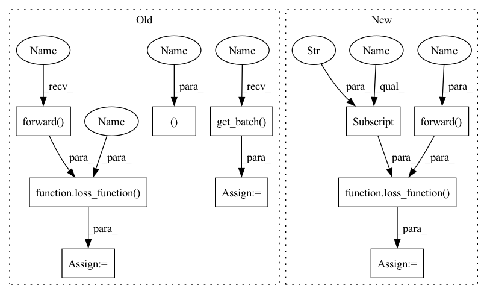

Pattern ID :41887

Before Change
self.linear = nn.Linear(in_features=self.input_size, out_features=self.classes_num)
def loss(self, batch, loss_function):
input_ids, token_type_ids, attention_mask, label = self.get_batch(batch)
pred = self.forward(input_ids=input_ids, token_type_ids=token_type_ids, attention_mask=attention_mask)
loss = loss_function(pred, label)
return loss
def forward(self, input_ids, token_type_ids, attention_mask):
x = self.bert(input_ids=input_ids, token_type_ids=token_type_ids, attention_mask=attention_mask).pooler_output
After Change
self.linear = nn.Linear(in_features=self.input_size, out_features=self.classes_num)
def loss(self, batch, loss_function):
pred = self.forward(batch)
loss = loss_function(pred, batch["label"])
return loss
def forward(self, batch):
x = self.plm(batch).pooler_output
In pattern: SUPERPATTERN
Frequency: 3
Non-data size: 10
Instances
Fragment ID: 117426283
Project Name: cognlp/cogktr
Commit Name: ab250d4d262351c1c99a8d7d7acf6996332421ed
Time: 2022-06-29
Author: 2113809110@qq.com
File Name: cogktr/models/base_sentence_pair_model.py
M Class Name: BaseSentencePairClassificationModel
N Class Name: BaseSentencePairClassificationModel
M Method Name: loss(3)
N Method Name: loss(3)
M Parent Class: BaseModel
N Parent Class: BaseModel
M File Name: cogktr/models/base_sentence_pair_model.py
N File Name: cogktr/models/base_sentence_pair_model.py
M Start Line: 20
M End Line: 22
N Start Line: 18
N End Line: 19
'>
Before Change
// self.apply(self.init_bert_weights)
def loss(self, batch, loss_function):
input_ids, c2w, w2s, character_mask, word_mask, sentence_mask, input_mask, label = self.get_batch(batch)
pred = self.forward(input_ids=input_ids, input_mask=input_mask, c2w=c2w, w2s=w2s,
character_mask=character_mask, word_mask=word_mask, sentence_mask=sentence_mask)
loss = loss_function(pred, label)
return loss
def forward(self, input_ids, input_mask, c2w, w2s, character_mask, word_mask, sentence_mask):
x = self.bert(input_ids=input_ids, attention_mask=input_mask).last_hidden_state
After Change
// self.apply(self.init_bert_weights)
def loss(self, batch, loss_function):
pred = self.forward(batch)
loss = loss_function(pred, batch["label"])
return loss
def forward(self, batch):
x = self.plm(batch).last_hidden_state
'>
Fragment ID: 117426282
Project Name: cognlp/cogktr
Commit Name: 74297bd98cc43489adb14de3a898044a1b906827
Time: 2022-08-02
Author: 2113809110@qq.com
File Name: cogktr/models/hlg_model.py
M Class Name: HLGModel
N Class Name: HLGModel
M Method Name: loss(3)
N Method Name: loss(3)
M Parent Class: BaseModel
N Parent Class: BaseModel
M File Name: cogktr/models/hlg_model.py
N File Name: cogktr/models/hlg_model.py
M Start Line: 48
M End Line: 51
N Start Line: 48
N End Line: 49
'>
Before Change
self.linear = nn.Linear(in_features=self.input_size, out_features=1)
def loss(self, batch, loss_function):
input_ids, token_type_ids, attention_mask, label = self.get_batch(batch)
pred = self.forward(input_ids=input_ids, token_type_ids=token_type_ids, attention_mask=attention_mask)
pred = pred.squeeze() // shape:(B,1)->(B)
loss = loss_function(pred, label)
return loss
def forward(self, input_ids, token_type_ids, attention_mask):
x = self.bert(input_ids=input_ids, token_type_ids=token_type_ids, attention_mask=attention_mask).pooler_output
After Change
self.linear = nn.Linear(in_features=self.input_size, out_features=1)
def loss(self, batch, loss_function):
pred = self.forward(batch)
pred = pred.squeeze() // shape:(B,1)->(B)
loss = loss_function(pred, batch["label"])
return loss
def forward(self, batch):
x = self.plm(batch).pooler_output
'>
Fragment ID: 117426281
Project Name: cognlp/cogktr
Commit Name: ab250d4d262351c1c99a8d7d7acf6996332421ed
Time: 2022-06-29
Author: 2113809110@qq.com
File Name: cogktr/models/base_sentence_pair_model.py
M Class Name: BaseSentencePairRegressionModel
N Class Name: BaseSentencePairRegressionModel
M Method Name: loss(3)
N Method Name: loss(3)
M Parent Class: BaseModel
N Parent Class: BaseModel
M File Name: cogktr/models/base_sentence_pair_model.py
N File Name: cogktr/models/base_sentence_pair_model.py
M Start Line: 59
M End Line: 62
N Start Line: 47
N End Line: 49